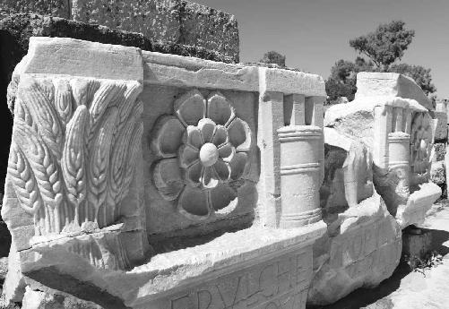
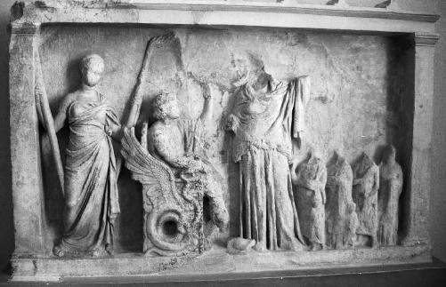
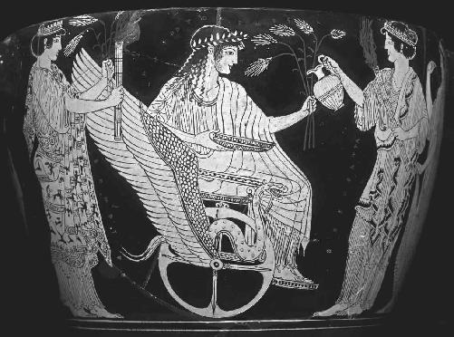
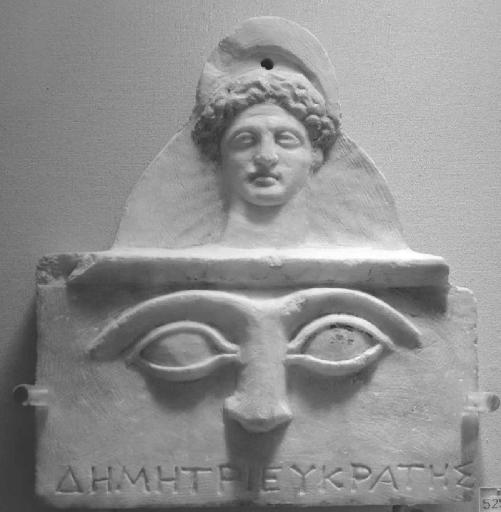
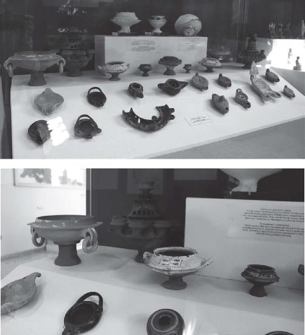

“The Eleusinian Mysteries and Christianity have so much in common. When I guide people through the threads of this archaeological site, I like to stress the similarities between ancient and modern,” says Kalliope Papangeli in a lilting Greek accent. At last I’m sitting cross-legged on the chalky ground outside the Archaeological Museum of Eleusis with the woman who has spent more time among the ruins below us than any person living today. Known to some as “Popi,” Papangeli is the chief excavator of Eleusis and the world’s expert on the original religion of Western civilization. For the past hour she has been my personal escort through this forgotten, sprawling complex—ten times bigger than I ever imagined.
I was already winded by the acrobatic tour over massive blocks and boulders shaping our path across the craggy site. Now I’m dizzy from trudging up the steep hill that grips the museum. Wiry and rail thin, Papangeli has been doing this for decades. She is totally unfazed in her red polo shirt and navy blue khakis. We have taken shelter from the sweltering sun beneath a wooden pergola that becomes our shady retreat. Papangeli is settled on the bench beside a marble sarcophagus from the second century AD. An Ancient Greek master and pupil, I’m soaking in the view while the wise sage unloads a torrent of information. To my right the Gulf of Elefsina sparkles a magnificent shade of blue I can’t recall seeing before. At the bottom of the steep incline to my left, the remains of Demeter’s temple lie in silence, whipped by passionate gusts of wind. Excavated earth surrounds the sanctuary on all sides in a massive, undulating footprint. If only these weathered columns could talk.
I thought I journeyed here in search of answers to a very pagan Greek riddle: did the initiates consume a psychedelic potion or not? And if so, where did it come from? In order to prove the pagan continuity hypothesis right, we have to start with the Ancient Greeks and their prehistoric ancestors. My conversation with Director Adam-Veleni and a close read of the twentieth-century’s giants in the field of Classics—Walter Burkert and Carl Kerenyi—has convinced me that Ruck’s scholarship is less controversial than his reputation suggests. So I have been preparing for months to engage Papangeli in a sober discussion, hoping to unpack forty years of academic bias against drugs. Only after the visionary kukeon is established does the possibility of the early Christians inheriting the biotechnology behind it become fair game. But for some reason Papangeli keeps jumping straight to the healer from Galilee. Completely untroubled by the obvious relationship between the cult of Demeter, Persephone, and Dionysus on the one hand, and the cult of Jesus on the other, the archaeologist has spent all morning leading me through some of the most concrete examples on her site. She has shown me up close how key elements of the Ancient Mysteries never really disappeared. They merely stepped into the shoes of Christianity and kept marching forward.
The first unprompted lesson in pagan continuity came at the very beginning of our tour, when Papangeli appeared in Marcus Aurelius’s courtyard in a sleek pair of sunglasses. As we crossed the Greater Propylaea, the monumental entrance to the more sacred areas of the precinct, the excavator motioned to the well-preserved marble of another former gateway on the right: the Lesser Propylaea. Carved in the first century BC, the architrave or beam that once topped the double columns of the portal is now arranged in bulky fragments on the ground. The symbols of the Mysteries are distinctly recognizable in high relief.
From left to right on one chest-high chunk of white stone, I scanned sheaves of grain, a rosette, and the sacred basket or cista mystica, as it’s known in Latin. On a more damaged piece to its right, I noticed the bucranium—a skull representing the bull, sometimes associated with Dionysus, that would be sacrificed in the all-night feast after the initiates had won their vision and completed the initiation. On a third and final piece of marble: another cista mystica and rosette. If there really was a psychedelic sacrament, it had to get from Athens to Eleusis somehow. And the containers carved in front of me are the prime candidates.

Marble architrave from the Lesser Propylaea, on the final steps of the Sacred Road connecting Athens to Eleusis. From left to right: the sheaves of grain, rosette, and sacred basket (cista mystica). Courtesy of the Archaeological Museum of Eleusis, Ephorate of Antiquities—Western Attica (© Hellenic Ministry of Culture and Sports)
“In this ciste (κίστη),” explained Papangeli, using the original Greek word for a basket or hamper, “they carried the sacred things. They say that it was just some grain. Others believe inside the ciste were the small clay Mycenaean idols. Either way, it was something light. Because the priestesses had to transfer it to Athens and back, so it was something not very heavy.”1
“It had to be portable, right?” I suggested.
“Yes,” replied the archaeologist.
“A portable sacrament maybe?”
“Yes, perhaps.”
“Do you think some of the ingredients of the kukeon would have been in there?”
“Maybe … maybe yes,” conceded Papangeli. As the wind hissed through the cracks in the classical marble, I could sense a follow-up statement being prepared. “You know, in the Orthodox Church, we have a potion too.”
The archaeologist was, of course, referring to the Eucharist. The more I thought about it, her casual link between the pagan and Christian sacraments wasn’t all that random. It had never occurred to me before, but the fact that the cista mystica was ritually transported thirteen miles from Athens, to be presented here to the priestesses who would consecrate the kukeon, suddenly made me think of a super-sized offertory procession. It’s that moment of the Catholic Mass when I would watch my nervous grade school friends present the Eucharistic “gifts” at the altar, amusingly marching up the middle aisle of the church with the unconsecrated Communion wafers and cruets of water and wine. Behind them, especially on Sundays, were the long-handled baskets full of money that the ushers had just collected in donations from the parishioners. The meaning is clear. In order for the priest to discharge his duties—transforming the bread and wine into the body and blood of Jesus—the people must first supply the raw materials and financial resources for the Mass’s quintessential act. What good is a church without its congregation?

The marble relief from the Archaeological Museum of Eleusis (above). The red-figure skyphos from the British Museum (following page). In both images, the divine missionary of the Mysteries, Triptolemus, is depicted riding his winged chariot of flying serpents. He is surrounded by both Demeter and Persephone. Courtesy of the Archaeological Museum of Eleusis, Ephorate of Antiquities—Western Attica (© Hellenic Ministry of Culture and Sports)
The idea settled here first, of course. The cista mystica, full of secrets, wasn’t the only thing the initiates sent this way. They also paid their fees to the officiants, and dedicated their savings to the animal sacrifices that would take place throughout the affair, relegating participation in the Mysteries to “the less poor strata of the population.”2 In addition Papangeli pointed out the enormous grain silo to our immediate left. “Every city of Greece sent part of its production of grain to the Sanctuary of Demeter,” she said, “because according to the legend, Demeter was the one who taught the people how to cultivate the earth.”
In the Hymn to Demeter, the Lady of the Grain dispatches the royal prince and demigod Triptolemus to teach the art of agriculture to Greeks everywhere. More than a farming lesson, Triptolemus’s travels across the ancient Mediterranean are referred to by Ruck as a “proselytizing mission” that was “analogous to that of Dionysus, as they both travel throughout the world on winged chariots drawn by serpents, spreading their respective gospels of the vine plant and the grain.”3 In the museum at our backs, there is a marble relief from the fourth century BC depicting Triptolemus and his flying dragon cart.

Courtesy of the British Museum Images (© The Trustees of the British Museum)
A very similar scene appears on a red-figure skyphos, or drinking cup, from the early fifth century BC. Now in the British Museum, it was created around Athens but discovered in Capua, Italy—north of Naples. Triptolemus, holding five sheaves of grain in his left hand, is flanked by Demeter and Persephone, each bearing torches. The Holy Child Iacchus, clearly labeled as “Dionysos” (ΔΙΟNYΣΟΣ), is portrayed in processional line behind the prince. The Lady of the Grain is about to pour some liquid into the broad basin pictured in Triptolemus’s right hand. If it’s the kukeon or a kukeon-like sacrament, does the gesture indicate that Demeter’s actual potion found its way to Ancient Greek colonists separated from the motherland, perhaps as far afield as Italy or sites even farther west? Would they have risked the goddess’s wrath by observing her holy rites outside the Eleusinian sanctuary?4 Either way, the grain silo on-site confirms Eleusis as the hub of a wheel that enclosed the entire Greek-speaking world. The first fruits of every harvest would always find their way back here, to the unique plot of soil that held “the entire human race together.”
The next lesson in pagan continuity came a minute later, as Papangeli indicated the small boulder embedded in the ground on the very last steps of the Sacred Road that took initiates up a slight gradient to the now-vanished Temple of Demeter. “Maybe this is the Mirthless Rock,” the excavator instructed, referring to the so-called agelastos petra (ἀγέλαστος πέτρα), where Demeter was said to have sat in mourning, waiting for Persephone to return from the depths of hell. “We know that there was an enactment during the Mysteries. So we can imagine that the priestess of Demeter sat here, very sad at the loss of her daughter, and some other priestess of Persephone came from over there,” she signaled to the rock shelter known as the Ploutonion we had just inspected, twenty paces away.
Gesturing to the hollowed-out slope that rises above the archaeological site and looks down into Demeter’s temple, Papangeli showed me where Persephone was resurrected from the subterranean gloom every year. A group of neo-pagans had recently left some offerings for the Queen of the Dead in a narrow crevice: a pomegranate, a sesame-seed cake, almonds, walnuts, and several sprigs of olive branches. “And here before the eyes of the initiates,” Papangeli continued, “we have the reunion of mother and daughter. It’s like we Christians have the Virgin Mother who lost her child.”
“Mater Dolorosa.” I was hoping to convince the guardian of the secrets that I was a trustworthy member of the dying species of ancient linguists. It’s the Latin phrase for the “grieving mother” motif in Christian devotion, Our Lady of Sorrows. The fifteenth-century oil panel from the early Netherlandish painter Dieric Bouts, currently in the Art Institute of Chicago, is one of the more famous examples of the teary Mary with bloodshot eyes.5
“Mater Dolorosa. Exactly!” confirmed Papangeli. “Mary also had an only child who went to the underworld, and then came back.”
“It’s interesting, isn’t it? The whole pagan continuity hypothesis. These universal themes that Christianity seems to have absorbed from Eleusis. You could say stole.”
“Yes, many things they stole from Eleusis.”
“Perhaps even recycled?”
“Yes,” Papangeli doubled down. “Whatever they cannot extinguish … they keep. It’s a very clever technique.”
The ancient Mediterranean of the first century AD was a total melting pot. No faith is born in a vacuum. The Gospel writers and Saint Paul, perhaps even Jesus himself, would have found inspiration in the spiritual landscape of the time. In some conservative religious circles, however, the theory still smacks of heresy. It undercuts the uniqueness and originality of what is supposed to be Jesus’s singular intervention into human history, with a new and unprecedented covenant that binds humanity to God through, among other things, the sacrament of the Eucharist. If the Church simply stole everything from the Greeks, it could be argued that the whole Christian enterprise is fatally flawed. And its one-of-a-kind mandate to save the human species from eternal damnation goes from something quite exceptional to something quite ordinary.
So the debate between religious authorities and secular scholars about the true origins of the rites and practices of early Christianity is an important one, with huge implications. The very first line of American historian Preserved Smith’s contribution to the April 1918 issue of the philosophical journal The Monist is an excellent case in point. “Those who have attended the celebration of a mass have witnessed the most ancient survival from a hoary antiquity,” he wrote. Smith put particular emphasis on the word “sacrament” (from the Latin sacramentum), which originally meant an “oath” or “solemn obligation.” By the early decades after Jesus’s death, however, it had already become the go-to translation for the Greek musterion (μυστήριον): “the initiation into holy secrets and magical practices characteristic of all the ‘mystery-religions,’ including Christianity.”6
Like the Greek Mysteries, therefore, whatever the earliest followers of Jesus were doing behind closed doors at their original Eucharistic celebrations appears to have included mystical hidden rites and revealed truths. Smith identified an especially pagan influence on the so-called Gnostic churches of the time—the esoteric Christian sects that thrived in the second and third centuries AD, only to be condemned as heretical and erased from the history of the faith. “Gnostic” is derived from the Greek word gnosis (γνῶσις), meaning “knowledge.” But this is no ordinary learning. These Christians were after something far more profound than the rational, down-to-earth knowledge too often made synonymous with our Greek ancestors.
Today’s foremost authority on this lost tradition is Princeton scholar Elaine Pagels. Her definition of gnosis from 1979 remains the best:
The Greek language distinguishes between scientific or reflective knowledge (“He knows mathematics”) and knowing through observation or experience (“He knows me”), which is gnosis. As the Gnostics use the term, we could translate it as “insight,” for gnosis involves an intuitive process of knowing oneself. And to know oneself, they [the Gnostics] claimed, is to know human nature and human destiny … to know oneself, at the deepest level, is simultaneously to know God; this is the secret of gnosis.… Orthodox Jews and Christians insist that a chasm separates humanity from its creator: God is wholly other. But some of the [G]nostics who wrote these gospels contradict this: self-knowledge is knowledge of God; the self and the divine are identical.7
In The Gnostic Gospels, Pagels references many of the fifty-two Gnostic texts that were unearthed in Nag Hammadi, Egypt, like a massive time-bomb in 1945. Written in the Coptic language, a late form of Egyptian rendered in the Greek alphabet, the first full translations of the recovered “gospels” were not published until 1977.8 Since then the Church has been forced to defend Archbishop Athenasius of Alexandria’s rabid call in AD 367 to “cleanse the church from every defilement” by rejecting these “apocryphal books” that are “filled with myths.”9 A reactionary move, itself based on the conclusion of Irenaeus two hundred years earlier. The bishop of what is now Lyon in southeastern France had determined in AD 170 that only four Gospels—Matthew, Mark, Luke, and John—were worthy of inclusion in the final New Testament. It was hard to argue with his unassailable logic: “there are only four principal winds, and four corners of the universe, and four pillars holding up the sky, so there can only be four gospels.”10 According to Pagels, however, it was the “potentially subversive” impact of the Gnostic worldview that troubled Irenaeus and the other Church Fathers: “it claimed to offer to every initiate direct access to God of which the bishops and priests themselves might be ignorant.”11 Indeed “all who had received gnosis, they say, had gone beyond the church’s teaching and had transcended the authority of its hierarchy.”12
In fact that’s exactly how one such Gnostic text, the Gospel of Thomas, opens its alternative account of Christianity’s founder: “whoever discovers the interpretation of these sayings shall not taste death.”13 Like something out of the Greek Mysteries, the ancient author makes no mention whatsoever of an all-male priesthood, or their stranglehold on the Church’s defining sacrament of bread and wine. Instead the Gnostics are invited to what Pagels calls “a state of transformed consciousness,” in which they gain unmediated, personal entry to the Kingdom of Heaven that is ordinarily denied to the uninitiated. By simply changing their perception, they discover the cosmos to be infused with new meaning. The invisible becomes visible. “Recognize what is before your eyes,” says the Gospel of Thomas, “and what is hidden will be revealed to you.”14 Like the priestesses here at Eleusis, the Gnostic Jesus was encountered as a mentor on the path of self-discovery that Pagels compares to psychotherapy: “both acknowledge the need for guidance, but only as a provisional measure. The purpose of accepting authority is to learn to outgrow it.”
Clearly this decentralized, freewheeling brand of Christianity didn’t survive very long. It’s one of the many aspects of the Greek Mysteries that the Church Fathers managed to “extinguish,” as Papangeli put it. But they didn’t throw the baby out with the bathwater. There was still plenty of room in Jesus’s cult for secrets, so long as the priesthood was there to shield them from any unworthy outsiders. After all, the very canonical, straitlaced Gospel of Mark reveals in no uncertain terms why Jesus chose to fill his public ministry with so many of the enigmatic parables recorded in the New Testament—the Prodigal Son, the Rich Fool, the Mustard Seed. Why not speak plainly? “Because the knowledge of the secrets of the Kingdom of Heaven has been given to you, but not to them [the uninitiated].” The word Mark uses for “secrets” is musteria (μυστήρια), the Mysteries. Thayer’s Greek-English Lexicon of the New Testament, first published in 1889, gives an even better definition: “religious secrets, confided only to the initiated and not to be communicated by them to ordinary mortals.”15
And just like what Demeter’s temple served up only feet away, the real Christian initiation was incomplete without a sublime vision. Pagels describes how Saint Paul, for example, surpassed the “ordinary mortals” to become one of the select immortals like Jesus:
Following the crucifixion, they [the Gnostics] allege that the risen Christ continued to reveal himself to certain disciples, opening to them, through visions, new insights into divine mysteries. Paul, referring to himself obliquely in the third person, says that he was “caught up to the third heaven—whether in the body or out of the body I do not know.” There, in an ecstatic trance, he heard “things that cannot be told, which man may not utter.” Through his spiritual communication with Christ, Paul says he discovered “hidden mysteries” and “secret wisdom,” which, he explains, he shares only with those Christians he considers “mature,” but not with everyone.16
There’s little doubt that Christianity was born with all the trappings of a mystery cult. As the religion grew, however, the relationship between the initiated and uninitiated became a serious point of contention. Who should benefit from the young faith’s deepest secrets—the people or the priests? As Papangeli and I approached Demeter’s temple, and I finally set eyes on the 52-by-52-square-meter sanctuary where Plato spied “the holiest of Mysteries,” the disconnect between the Ancient Greek and Christian initiation hit me in a visceral way. It was the last thing I expected to find here. But there it was, dominating the precipice that looked out over the entire site, with the Ploutonion far below.
“What the hell is that?”
“Ah, this is interesting.” The archaeologist lit up. “A little Christian church, post-Byzantine, dedicated to our Virgin Mother. Mater Dolorosa also.”
“Really? Isn’t that a little bizarre?”
“Yes,” Papangeli agreed. But there was more. “Her festival is also in the autumn. And the women of Eleusis come here bringing loaves of bread for the priest to bless.”
“Just like Demeter, the Grain Mother? It’s the same story … just a different name. For two thousand years.”
“For two thousand years, yes!” Papangeli went on to explain how the chapel’s patroness, Panagia Mesosporitissa, literally means “Our Virgin of the Mid-Sowing.” In the Greek Orthodox Church the biography of the Virgin closely resembles the traditional growing season, making this specific Virgin the godmother of farmers. Mary is said to have died on August 15 and been buried on August 23, which coincides with the end of both the agricultural and liturgical calendars in Greece. It is then that “the Mother of God descends into the underworld, only to return in early autumn, when a new agrarian cycle begins.”17 With the arrival of the fall rains, the laborers get to work seeding and tending the land. They finish half the job by November 21, when the festival that Papangeli mentioned takes place at this humble rectangular building standing over the primitive entrance to hell.
“And they just parade through the archaeological site?” I asked about the participants in the Christian festival.
“Yes. It’s the custom.”
In the early evening, on the steps of the chapel across from the nineteenth-century bell tower topped by a cross, the faithful—mainly women—present their round loaves of prosphoro, or “holy bread,” in twenty-first-century cista mystica for the clerical benediction. They also boil up a mixture of grain seeds and legumes known as polysporia, or “varied seed.” The officiating priest has been reported standing “before a sea of bread and lighted candles.”18 He symbolically blesses one loaf, after which the women distribute the grain products to all assembled for a tasty Communion and, hopefully, a prosperous second half of the growing season. Many elements of the Mysteries remain. But gone is the vision, the inner transformation, and the personal responsibility for one’s own spiritual development. The fate of the soul has been placed in the hands of the priest. Just as in the other 9,792 parish or monastery churches throughout Greece, or any of the myriad Roman Catholic basilicas and cathedrals across the planet, the priest calls the shots here and commands the blessing.19
At the climax of the Greek Orthodox ordination ceremony—when the magical, sacramental power is bestowed on the freshly ordained priest—the bishop will hold up his new sacred vestments one by one, while proclaiming “Axios!” (Ἀξιός) in Greek, which means “worthy.” The congregation returns with a booming “Axios!” Indeed, only the priest is deserving of the “secrets,” or musteria (μυστήρια), of initiation. To close the service the bishop places the consecrated Eucharist in the hands of the properly admitted priest, saying, “Receive this Divine Trust, and guard it until the Second Coming of our Lord Jesus Christ, at which time He will demand It from you.”20
It’s the longest-running old boys’ club in Western civilization. Blood brothers, sworn together as God’s bouncers, until the end of time. What cherished secrets have they been protecting for two thousand years? Potentially the same ones Papangeli would like to shelter from curious minds that might not fully appreciate the sanctity of this site, or the genuine spiritual legacy that continues to draw people here from all over the globe.
Tourists and pilgrims are two very different categories of visitors. Much as I tried to paint myself as the latter, Papangeli wasn’t having it. I brought up the fact that I had wanted to explore this place since I was a teenager. And that I purposely chose the fall equinox for this mission, just when the ancient initiates themselves would have shown up on the Greater Propylaea. I even correctly identified her name, Kalliope, as the Muse of epic poetry and rattled off the first line of The Odyssey in Ancient Greek, where Homer invokes the same goddess. But in the end Papangeli seemed to disagree with the very premise of my investigation.
“I wish you luck,” she teased me earlier on, “but let’s keep the Mysteries mysteries.”
Here under the shade of the pergola, at the tail end of our tour, the archaeologist is nevertheless indulging my probing questions about drugs. And finally we’re having the conversation about Ruck’s scholarship that brought me here in the first place. I have just shown her my copy of The Road to Eleusis, with which she’s very familiar. When Ruck’s book was translated into modern Greek about a decade ago, Papangeli was the one who oversaw the translation. She has reviewed the old professor’s arguments in detail. And she’s proudly unconvinced.
“I don’t agree,” she states flatly, examining the cover. “Modern people find it hard to believe that the ancients could go to a higher spiritual condition without drinking some psychedelic.”
“Of course. There are many paths to the divine.” I’m thinking of Fritz Graf’s “endogenously produced ecstatic experience,” which can’t be ignored. The initiates did arrive here hungry, thirsty, and exhausted—whipped up by all the frenzy and excitement of the thirteen-mile parade. Not to mention the year and a half of preparation and anticipation. Plus, the anthropological record is full of countless, sometimes cruel, methods for achieving altered states of consciousness in the absence of psychoactive compounds. Consider the ritual ordeals so often present in traditional rites of passage: fasting, scarification, tattooing, body-piercing, fire-walking, beating, sleep and light deprivation, suspension in the air, amputation of fingers.21 Romanian scholar Mircea Eliade referred to them as the “archaic techniques of ecstasy,” employed since time immemorial in “tribal initiation rites” or “admission to a secret society.”22 Aside from the rougher austerities, naturally occurring sicknesses, epileptic attacks, and hallucinations can also “determine a shaman’s career in a very short time.”23
Other procedures are even more bizarre. Consider the initiation rite of the Iglulik Inuit, which is open to any “ordinary mortals” willing to undergo psychic surgery. The angakok, or master shaman, somehow “extracts” the candidate’s soul from his eyes, brains, and intestines, separating it from the body. In Eliade’s opinion “these experiences of ritual death and resurrection” are “ecstatic” rituals.24 After “long hours of waiting” and “sitting on a bench in his hut,” the future shaman is then endowed with the kind of vision alluded to in the Gospel of Thomas, so that the invisible becomes visible. This newfound sight is called “lighting” or “enlightenment.” It’s described as an “inexplicable searchlight” or “luminous fire” within the brain:
Even with closed eyes, [the initiate can] see through the darkness and perceive things and coming events which are hidden from others; thus they look into the future and into the secrets of others.… He sees far ahead of him, through mountains, exactly as if the earth were one great plain, and his eyes could reach to the end of the earth. Nothing is hidden from him any longer; not only can he see things far, far away, but he can also discover souls, stolen souls, which are either kept concealed in far, strange lands or have been taken up or down to the Land of the Dead.25
Something along these lines was happening right here for almost two thousand years, until Emperor Theodosius outlawed the Mysteries at the end of the fourth century AD. In 1962 Kerenyi called it the visio beatifica, or “beatific vision.” He borrowed the term that was “coined to designate the supreme goal” of Christianity: “those who obtain this vision are transported into a state of eternal beatitude.”26 Kerenyi was comfortable with the comparison, however, given “the undeniable evidence that the epopteia conferred happiness.” And just like the Christian mystics blessed with “the immediate sight of God” in the long history of the Church, the esteemed scholar felt the Eleusinian vision was something truly miraculous. Something to be witnessed “with closed or with open eyes.”27 Unbelievable as it sounds, the visio beatifica was so exceptional, and so very different from ordinary seeing, that even the blind might take part.

The Eukrates votive relief is said to record the beatific vision of the Eleusinian Mysteries. Where even the blind might learn to see.
Courtesy of the National Archaeological Museum (© Hellenic Ministry of Culture and Sports)
In the National Archaeological Museum of Athens, there is a marble plaque known as the Eukrates votive relief. Dating to the fifth century BC, it was found right here in Demeter’s temple. In the upper portion a goddess is depicted from the neck up, burnished rays of light emanating from her face. Below, two eerie, almond-shaped eyes stare back at us from across the millennia. Aside from a nose and eyebrows, the rest of the initiate’s face is completely missing. The Greek inscription at the bottom reads, “To Demeter, [from] Eukrates.” When its owner contemplated the head of the goddess, says Kerenyi, “he was probably reminded of the epiphany of Persephone” that cured his blindness.28 Her name was not supposed to be written down, so Eukrates replaced it with “Demeter” to safely record his visio beatifica for posterity.
Kerenyi’s interpretation is provocative, if unprovable. But it’s worth noting an obscure paper published in the Journal of Near-Death Studies in 1997, “Near-Death and Out-of-Body Experiences in the Blind: A Study of Apparent Eyeless Vision.” The authors, Kenneth Ring and Sharon Cooper, surveyed thirty-one blind respondents, including those blind from birth. The vast majority reported crisp, detailed visual awareness during their moment of crisis. Astonishingly, the narratives of the blind were found to be
indistinguishable from those of sighted persons with respect to the elements that serve to define the classic NDE [near-death experience] pattern, such as the feelings of great peace and well-being that attend the experience, the sense of separation from the physical body, the experience of traveling through a tunnel or dark space, the encounter with the light, the life review, and so forth.29
One interviewee, who lost his sight in a car accident when he was nineteen, spoke of “a comforting vision of his deceased grandmother across a valley” during his NDE. Though he can’t explain how it happened, he knows what he saw: “Of course I had no sight because I had total destruction of my eyes in the accident, but [my vision] was very clear and distinct.… I had perfect vision in that experience.”30 Given similar testimony from the other respondents, the authors conclude that “coming close to death appears to restore their sight to normal, and perhaps even superior, acuity.”31
The phenomenon is almost identical to the visio beatifica witnessed by Gordon Wasson during his psilocybin trip in Mexico back in 1955: “the visions came whether our eyes were open or closed.” And just like the near-death X-ray vision of the Inuit shamans who could “see through the darkness” and plumb “the Land of the Dead,” the hyper-realistic mental images unleashed by the psilocybin gave Wasson the distinct impression that he had been liberated from the physical body: “a disembodied eye, invisible, incorporeal, seeing but not seen.”32
The many decades of controlled psychedelic experiments are replete with similar tales, including “complex hallucinations” in the blind and unexpected encounters with “loved ones and ancestors.”33 In his book Sacred Knowledge: Psychedelics and Religious Experiences, Hopkins researcher William Richards takes note of the obvious:
The literature on near-death experiences, reports of those who have entered into the physical processes of death and have been resuscitated, contains many intriguing stories to ponder that are often very similar to psychedelic experiences, complete with reports of moving through tunnels, encountering visionary beings, and being drawn toward sacred realms of light.34
Dismissing the apparent connections between ecstatic, near-death, and psychedelic experiences is as productive as ignoring the continuity between the pagan and Christian traditions that continue to overlap at this ancient site. Rather than pitting Albert Hofmann and Fritz Graf against each other, isn’t it possible they’re both right? The Eleusinian initiates could have both suffered through the physical demands of a traditional rite of passage, and received a carefully dosed psychedelic potion to amplify whatever they experienced inside Demeter’s temple. The two theories aren’t mutually exclusive.
I want Papangeli to appreciate my own tentative approach to Wasson, Hofmann, and Ruck, whom I’ve spent a decade trying to fact-check. I tell her, transparently, that I have my own reservations about their hypothesis. And that I’m constantly appealing to the reasonable voices in the room, like Graf’s mentor and Classics icon Walter Burkert. I read her a few lines from his 1985 English edition of Greek Religion that I captured on my phone just before the flight to Athens. A stunning passage from his chapter on “Mysteries and Asceticism” that too many historians have glossed over too quickly:
Demeter and Dionysus are gods of important mysteries; the drinking of the barley potion or the drinking of wine are central ceremonies. Yet to derive mysteries from agrarian magic is at best a conjecture about prehistory.… It may rather be asked, even without the prospect of a certain answer, whether at the basis of the mysteries there were prehistoric drug rituals, some festival of immortality which, through the expansion of consciousness, seemed to guarantee some psychedelic Beyond.… A ritual can persist when the original drug has long been forgotten and replaced by harmless substances. Perhaps the night of the mysteries was not so very different from an Orthodox Easter festival or a Western Christmas.35
Papangeli’s interest is piqued. “I’ve read all his books.”
“Me too. But for some reason, I’d never noticed that passage before. When I read it a second time, Professor Burkert opened my mind to a possibility. A possibility I soon discovered this guy was sympathetic to as well.” From my squatting position on the ground, I extend a copy of Kerenyi’s Eleusis: Archetypal Image of Mother and Daughter, originally written in German, like Burkert’s masterpiece.
“Ah, Kerenyi!” exclaims Papangeli, as if she just bumped into an old friend.
“Did you know there’s an appendix in this edition dedicated to what Kerenyi calls ‘the pharmacological question’?”
The archaeologist seems surprised. When I first spotted it, so was I. The last name I expected to find in Kerenyi’s authoritative text on this sanctuary was Albert Hofmann’s. Years before he teamed up with Wasson and Ruck, the Swiss chemist shared some interdisciplinary insight with his European colleague. Instead of ergot, Kerenyi was focused on the kukeon’s third ingredient from the Hymn to Demeter, mint. Today it’s called Mentha pulegium. What species the Greeks had in mind with blechon (βλήχων), we’re not entirely sure. So the Teutonic scholar looked to a modern-day equivalent, with broad application from North Africa to Central Europe. He believed a form of pennyroyal could have been involved in the Mysteries; its oil and leaves known to possess medicinal properties. Kerenyi quotes a personal letter he received from Hofmann at some point in the mid-1960s: “The principal ingredient of the poley oil (Oleum pulegii), prepared as an aromatic in southern Europe and obtained in distilling the wild plant [Mentha pulegium] is the aromatic substance pulegone.… In large doses it induces delirium, loss of consciousness, and spasms.”36
Kerenyi’s willingness to entertain the psychedelic hypothesis may have paved the way for Burkert’s above speculation about the “psychedelic Beyond” in 1977, a year before The Road to Eleusis hit the shelves. Before psychedelics became controversial and taboo, Kerenyi’s early collaboration with the discoverer of LSD reads like a fair compromise:
It is possible that the kykeon at Eleusis conferred not only the “initial thrust” but also the necessary inner peace and perhaps still other prerequisites of the vision. Dr. Hofmann’s words are: “The volatile oils contained in poley oil (Oleum pulegii) might very well, added to the alcoholic content of the kykeon, have produced hallucinations in persons whose sensibility was heightened by fasting.” 37
As I summarize their findings, Papangeli is stone-faced. When read in the context of the Classics elite that preceded him, Ruck doesn’t actually seem all that crazy. “Do you think Eleusis could have started as a ‘prehistoric drug ritual,’ as Burkert calls it?” I ask.
“Yes,” she replies with no hesitation. “Maybe it started as an agrarian festival, and then later it begins to have these eschatological meanings for the afterlife.”
“But by the time that prehistoric festival came here to Eleusis, it lost the drug? So the kukeon was nothing more than a harmless potion?”
“Yes,” she agrees again.
“Just like the Communion?” The instant the word “Communion” comes out of my mouth, as if God were listening in, the bell on the nineteenth-century tower a hundred yards away begins tolling. Twelve rhythmic clangs marking the noontime hour, right next to the chapel of Panagia Mesosporitissa.
“Exactly. A Communion.”
“So that’s where we are.” I decide not to press my luck with the psychedelic hypothesis. Like Burkert, the archaeologist is at least willing to entertain the notion that potent hallucinogens once played their part in some Stone Age version of the Mysteries. Wherever they were practiced in remote prehistory, long before the Greeks, Papangeli can imagine those mind-altering rites descending on this now-deserted complex in some watered-down form. And that’s good enough for me. Because in the forty years that have elapsed since The Road to Eleusis fleshed out Burkert’s and Kerenyi’s early speculation about the active ingredients of the kukeon, a new field of science has developed to confirm or deny the formerly untestable hypothesis once and for all.
As we will see in the next chapter, no longer do stuffy classicists need to fumble around in the dark “without the prospect of a certain answer,” as Burkert wrote. The limitations of traditional archaeology—especially in deciphering the drinking, feasting, and other ritual habits of ancient cultures—have become all too apparent. Pioneering excavators are increasingly looking to other specialties to support their craft, resulting in the rapid growth of a scrappy, young discipline called archaeological chemistry.
Over the past couple decades, state-of-the-art technologies like Fourier transform infrared spectroscopy (FTIR), high-performance liquid chromatography (HPLC), and gas chromatography-mass spectrometry (GC-MS) have become more readily available. And scientists are now able to identify what our ancient ancestors were drinking by extracting the chemical signatures from organic residue that has either survived intact within excavated vessels, or been absorbed into the porous matrices of their ceramic pottery.38 Some incredible finds have been announced by the few researchers dedicating their careers to this cutting-edge hunt for intoxicants, with discoveries reaching back as much as thirteen thousand years.39
The age of speculation is over.
As I pack up my things and prepare to leave, I recall the many chalices that were unearthed from the ground below. Papangeli just walked me through a dozen samples protected behind glass, right here in the final room of the Archaeological Museum of Eleusis.
“About those vessels. Would you be open to having them scientifically tested?”
“We have the ambition to find a kernos with something inside, so we can really have an experiment,” she answers, referring to the earthenware or metal vessel ordinarily associated with the Mysteries. Here on-site a number have been found featuring a central bowl ringed by several smaller cups. Quoting an ancient author, Kerenyi lists the produce that may have once filled the peripheral containers: “sage, white poppy-seeds, grains of wheat and barley, peas, vetches, okraseeds, lentils, beans, rice-wheat, oats, compressed fruit, honey, oil, wine, milk, egg, and unwashed wool.”40 An unruly mix that provides much more detail than the Hymn to Demeter, though Ruck thinks the kernos was largely symbolic. Its shape, moreover, would have made it “ungainly as a drinking vessel.”41 More probably it was used as a “chalice containing some important ingredient for the mixing ceremony” that took place in the temple below, perhaps ergotized barley or magic mint. Once the vessel was consecrated, the hierophant performed the initiation by “raising his kernos aloft” and tasting the contents.42 The initiates followed suit, sipping from vessels that more likely resembled the other containers all neatly assembled within the museum behind us. Just waiting for their ancient, microscopic contents to be flown off to any number of laboratories that would jump at the opportunity to solve the best-kept secret in the history of Western civilization. I’m shocked that Papangeli, as a skeptic of Ruck’s work, is on board.

Ceremonial vessels excavated on-site and arranged for display in the Archaeological Museum of Eleusis. Chalices like these were used to mix or consume the kukeon during the Mysteries. Courtesy of the Archaeological Museum of Eleusis, Ephorate of Antiquities—Western Attica (© Hellenic Ministry of Culture and Sports)
“So why haven’t you tested them yet?”
“Because they were treated … cleaned. This is why. Of course, we have more in the storerooms,” she adds. “But they were also treated for conservation.” Reminding me of Eleusis’s peculiar archaeological history, she informs me the vessels “were all found at the end of the nineteenth or early twentieth century.”
“They were all excavated a hundred years ago? And you haven’t found any since?”
“I don’t excavate inside the site any longer. We excavate outside, within the modern city of Eleusis, which sits over the ancient city. We find graves and such things.”
“But no vessels?”
“No ceremonial vessels.”
“So is it possible there are still some vessels under here then?” I sweep my hand toward the ruins below.
“I think they have explored the whole thing.”
“Really? You think all the ceremonial vessels were recovered by those crazy archaeologists at the turn of the century? They didn’t know what they were doing.” I’m exaggerating, but one of the principal credos in archaeology could not go unmentioned: to dig is to destroy. The modern excavations that began here in 1882 may have been methodical compared to what came before, but any poking around the site is inherently destructive. Like anywhere else, incomplete excavation records and find registries are a problem at Eleusis.43 “We may never know the answer, if we can’t test one of those vessels, right?”
“Yes.” Papangeli nods her head pensively.
“So the Mystery continues.”
“Yes … I hope!” she snickers. We both erupt into laughter as our chess match reaches the same stalemate that has been in place for thousands of years.
“Why don’t you want to solve this thing?”
“We have different aims, Brian.”
“You like the mystery being kept alive. Why is that?”
“Everybody likes a mystery. It was the mystery that attracted you to this story, wasn’t it? So let the next generations be attracted to the mystery as well,” Papangeli counsels me. With that, the archaeologist disappears into the museum.
Like the great Walter Burkert, Papangeli may be right that “a ritual can persist when the original drug has long been forgotten and replaced by harmless substances.” That said, all the ancient testimony from Plato, Pindar, Sophocles, Cicero, and Praetextatus indicates that two millennia’s worth of initiates flocked here for a compelling reason. And whatever happened inside Demeter’s temple a few yards away was anything but the kind of empty bread-blessing ritual that takes place every November up there at Panagia Mesosporitissa. There’s no doubt the modern-day Eucharist is a “harmless,” un-psychedelic affair. But, once again, it tells us nothing about the sacrament that may have accompanied the Church’s infancy two thousand years ago. In the Greek and Christian Mysteries alike, perhaps the classical practitioners did not want to abandon the spiked potion of their prehistoric ancestors for a mere placebo.
If we can’t test the ritual chalices from Eleusis, we have to look elsewhere for clues. Fortunately my long-awaited rendezvous with the elusive Papangeli has at least narrowed the scope of this investigation. Perhaps the question is no longer whether mind-altering potions were used in the kinds of rituals that preceded Eleusis. But when, if ever, Burkert’s “original drug” had been “forgotten and replaced” by a placebo.
To the dismay of many fine classicists and historians, it looks as if civilization began with a toast. And the party never stopped. Just east of the place where democracy first came to life, a prehistoric ritual was born in a country so entangled with the history of Greece that an epic battle between its people became Homer’s founding poem about Western civilization. Toward the end of the last Ice Age, long before the Trojan War, the ancient land now known as Turkey was famous for something else.
The birth of religion itself.
And the religion with no name that sprang from its soil just may have been the drunken, hallucinogenic religion that made the Mysteries possible.